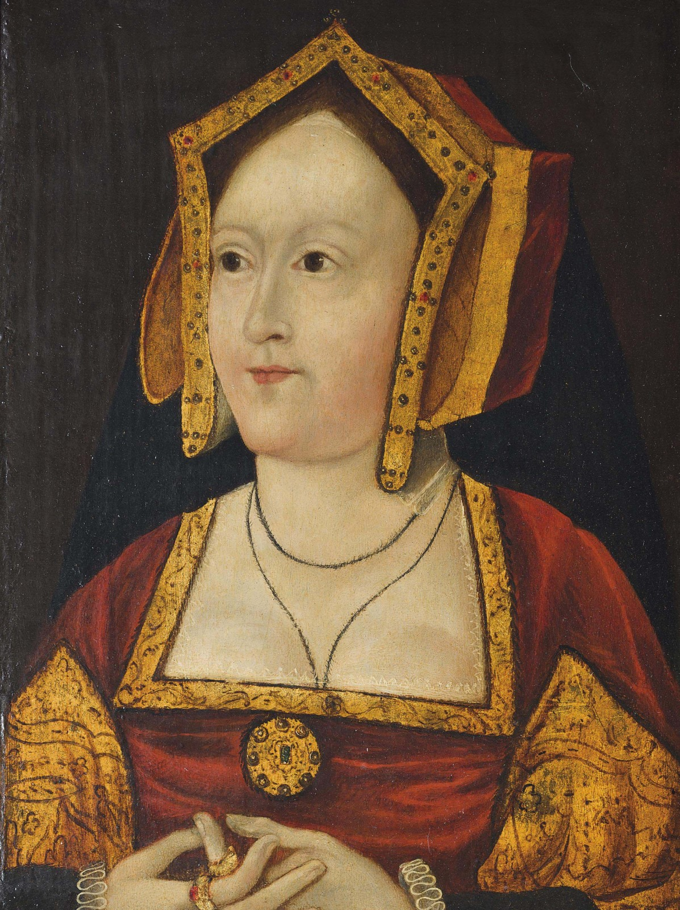

In 2017 the six wives of Henry VIII took the world by storm in the new musical SIX.
Which wife are you? Devoted Catherine of Aragon? Sexy Anne Boleyn? Also sexy Catherine Howard? Perhaps
even mysterious and also sexy Mary Catherine?
Take this quiz to find out!!!!!!
How do you feel about being sent to live in a nunnery against your will?
No way!
If I can be
a sexy nun, sure!
If that's
what my loving husband wants, of course!
Do I still
get to go to court and embarrass the king?
I'm like
twelve, I hate it!
Only if I
get to teach the nuns to read and write.
Once you've married Henry VIII, he starts sleeping around with other women. What do you
do?
I take a
deep breath, keep my cool, and say nothing.
I
immediately imply that he has erectile dysfunction, even if this leads to me losing my
head.
If I can't
make him happy, he can do whatever he wants! I love him too much to stop him!
He rejected
me before we got married so now I just live in a palace and do whatever I want all day. Have
fun!
Oh no! I
thought he was different from other men!
You forced
me to marry you instead of the love of my life for THIS?!
When people get married, they usually promise to love each other for ever. But are you
REALLY sure that Henry VIII loves you?
After the
first fifteen years he got bored and started sleeping around, so I'll go with no.
He did
leave his first wife on me, so I guess so?
Yes! I'm
the only one he truly loved!
We never
got married but apparently he loves me like a sister, so that's fine.
Unlike the
other men who've slept with me, told me they love me, and then dumped me, Henry will
definitely love me forever.
When you're
a man's sixth wife you're honestly more worried about survival than love.
After promising to marry you based on your portrait, Henry has rejected you after seeing
you
in the flesh. What do you do?
Pack my
bags, move to a nunnery of my own free will, and start a world-famous gospel choir!
I dunno,
probably go dancing and snog some hot guys? #sorrynotsorry
But he's my
true love! I'll enact a daring and probably ineffectual scheme to win him back!
He can't
risk offending my family, so I'll probably make him give me a palace in Richmond and live
out my days in luxury.
Hopefully
this will give me the chance to take some time for myself. I am only like thirteen years
old!
I'll go
back to the love of my life, marry him, and probably open a school for illiterate women.
After marrying Henry, you find yourself overwhelmed with life at court. Luckily, one of
his
courtiers becomes very friendly towards you. What do you do?
Tell him
that I'm devoted, even to my trash man of a husband, and to stay at least five feet away
from me at all times.
I'll show
him exactly why Henry called me Greensleeves!
Henry loves
me far too much to leave me overwhelmed at court! I'll physically hold onto my King so he
can never leave my presence!
I'll tell
him to get down.
All the men
I've been with so far have been awful. I'm fourteen though, so I'm sure this guy's
intentions are pure! Let's be besties!
He isn't
the man I was forced to leave for Henry, so I have no interest in him.
You're just about to marry the love of your life when Henry VIII appears, and tells you
to
marry him or he'll kill you. What do you do?
Ask God,
then tell Henry that God says no.
I dunno,
maybe get drunk and vom all over him at the altar? #stillsorrynotsorry
Henry is
the love of my life anyway! I willingly accept!
Laugh in
his face as I call my dad, who will threaten to cut all financial ties with England unless
Henry backs off.
As a
teenager who's only ever been treated badly by men, I'm sure Henry knows what's best, so
I'll do as he orders.
Write a
tearful goodbye note to my love, regretfully marry Henry, and then wait for him to die.
You are CATHERINE OF ARAGON!

As Henry's first and longest-serving wife, you're a paragon of royalty. You show faith,
piety, and above all patience when it comes to your husband's wayward dalliances.
You are ANNE BOLEYN!
Notorious for having inspired the poem Greensleeves, your love of song and merry-making
ultimately leads
to your downfall after you insult your philandering husband in public. He cuts off your head
when you
are 35.
You are JANE SEYMOUR!
You are said to be the wife that Henry loved the most. You manage to give him the son he wanted
so
badly, but tragically die in childbirth. Your love later inspires Henry to replace his other
wives'
faces with yours in their portraits.
You are ANNE OF CLEVES!
After you are rejected by Henry for not looking like your portrait, you use your political
influence to
get him to give you a giant palace, and live out your days in luxury.
You are KATHERINE HOWARD!
After being used and abused by men throughout your life for your unrivalled beauty, Henry
marries you
and does exactly the same thing. When you seek comfort from one of his courtiers, Henry has you
exected
for infidelity at the age of 17.
You are CATHERINE PARR!
Your engagement to the love of your life is interrupted by Henry, who threatens to kill you
unless you
marry him. You do, and have to wait four years for him to pop his clogs. Sadly, you die a year
and 8
months later.
You are MARY CATHERINE!
Little is known about Henry's mysterious seventh wife, who is said to have served in his court
as a covert diplomat from Ireland. Her existence was long dismissed as a hoax,
but a
cache of
secret love letters, along with a marriage certificate, were unearthed in her ancestral home of
Dublin
in November 2019.